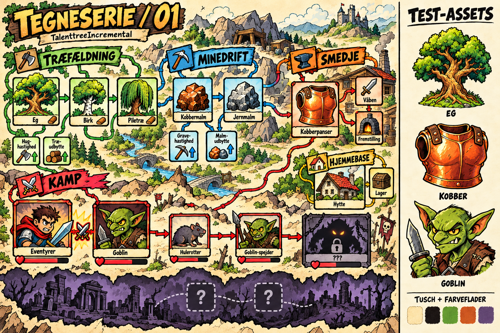

Kraftig tuschstreg, større farveflader og mere udtryksfulde figurer. De samme tre motiver vises i begge stilarter. Prøverne er et visuelt forsøg; det eksisterende tema er bevaret.
Kortet er en konceptillustration. Det viser grafisk retning og stemning; forbindelser og placeringer er ikke en ny specifikation af spillogikken.
